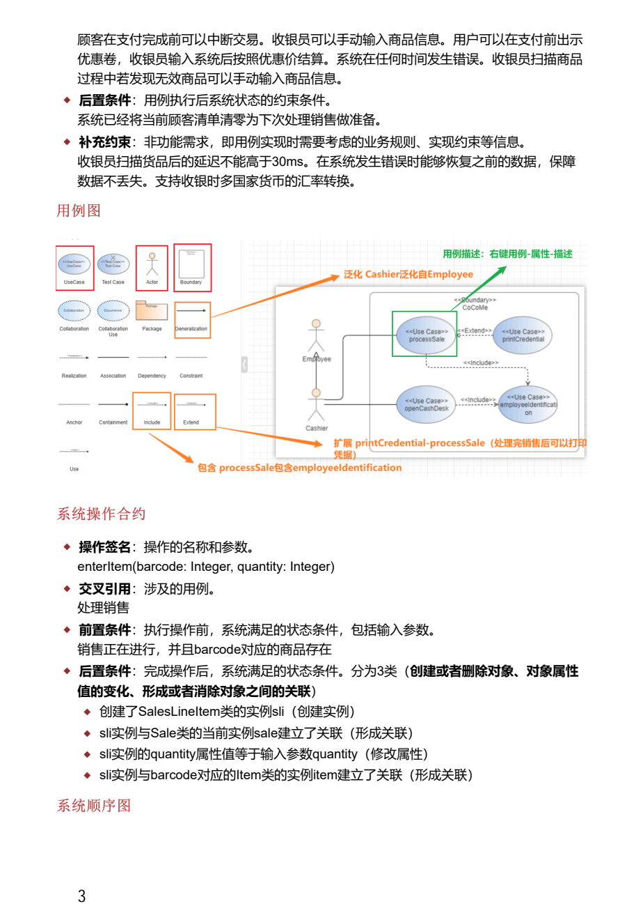
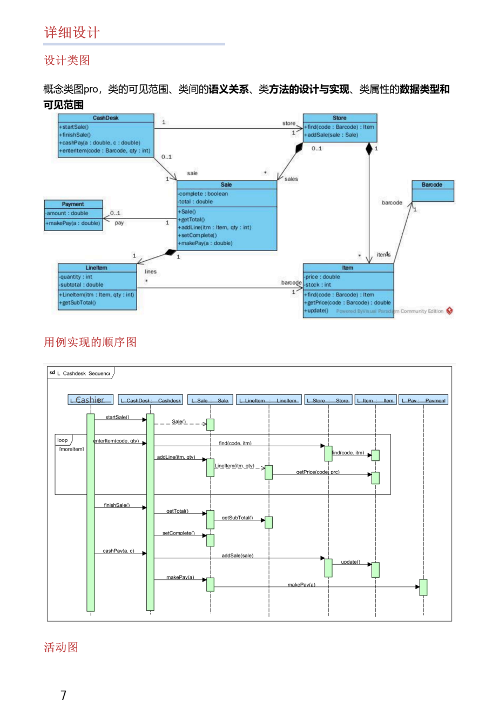
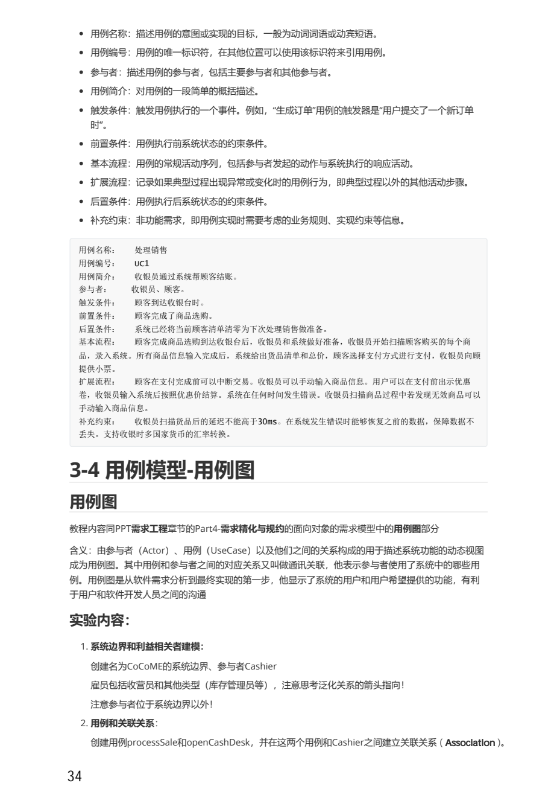

Day 1 软工画图从零深学讲义
这节课只做一件事：把“看到一大段业务描述完全不知道画什么”变成“先识别题型，再按模板画出最低不丢分骨架”。软工开卷不等于临场翻资料，真正的开卷能力是题眼索引和作答模板。
今天这篇怎么读：Day1 不是把所有图画完
软工画图最容易崩在第一分钟：题干一长，你会急着找“标准图长什么样”，然后把用例、流程、类、状态混在一起。Day1 不要求你画完美图，只要求你建立一个稳定动作。
| 不要急着做 | 今天真正要会 |
|---|---|
| 不要一上来临摹 PDF 大图。 | 先知道每张图回答什么问题。 |
| 不要把一个系统所有功能塞进一张图。 | 题目问什么图，就只抽对应信息。 |
| 不要把图画得“像”，但解释不出为什么。 | 每条线旁边都能说一句人话理由。 |
0. 先把软工图放回“软件开发过程”里
你现在觉得软工画图难，主要不是不会画椭圆和箭头，而是不知道每张图在软件工程里承担什么任务。软工不是为了画图而画图，图是把需求、设计、实现和测试之间的想法说清楚。
软工画图第一原则：先问“这张图回答什么问题”，再问“该画哪些符号”。
1. 读题四支笔：角色、动作、对象、状态
画图题会给你一段自然语言。零基础不要直接画，先拿四支笔圈词。圈词不是慢，而是防止方向错。
学生提交实验上机预约，系统检查时间冲突。管理员审核预约并安排机房。学生可以查询自己的预约结果。未登录用户只能查看公告。
| 题目问法 | 优先图类型 | 你要抽什么 |
|---|---|---|
| 谁能使用哪些功能？系统边界是什么？ | 用例图 | 参与者、用例、系统边界、include/extend/泛化。 |
| 某个操作按时间怎么发生？谁给谁发消息？ | 顺序图 | 生命线、消息、返回、条件分支、循环。 |
| 系统有哪些对象/类？类之间什么关系？ | 类图 | 类名、属性、方法、关联、多重性、继承/聚合/组合。 |
| 一个对象有哪些状态？事件如何触发状态变化？ | 状态图 | 状态、事件、转换、初态、终态。 |
| 业务流程如何走？如果/否则/并行如何表达？ | 活动图 | 动作、判断、分支、合并、开始、结束。 |
1.1 空白纸上第一笔怎么下
真正考试时，你最需要的不是“我见过这张图”，而是知道第一笔落在哪里。第一笔一对，后面就能补；第一笔错了，整张图会越画越乱。
| 图类型 | 第一笔 | 第二笔 | 最后自查 |
|---|---|---|---|
| 用例图 | 画系统边界框。 | 框外放参与者，框内放动宾短语用例。 | 参与者是否都在框外？用例是否是功能目标？ |
| 系统顺序图 | 画参与者和“系统”两条生命线。 | 按时间从上到下写系统操作消息。 | 是否只描述一个具体场景？ |
| 组件顺序图 | 列出界面、控制/服务、数据对象生命线。 | 把外部请求拆成内部消息链。 | 消息是否从上到下？有没有把类图关系画进来？ |
| 类图 | 从名词列候选类。 | 补属性、方法、关联和多重性。 | 有没有把动作误画成类？关系两端数量是否标了？ |
| 状态图 | 选定一个对象，画初态和第一个状态。 | 用事件连接状态转换。 | 是否围绕同一个对象生命周期？ |
| 活动图 | 画开始点和第一个动作。 | 遇到“如果/否则”画判断分支。 | 是否表达流程，而不是对象结构？ |
2. 你资料里的“图链路”：不是孤立背图名
我看了你的 `画图题.pdf`，它前几页不是随便放图，而是按一条软工链路在走：用例描述 -> 系统操作合约 -> 系统顺序图 -> 概念类图 -> 概要设计包图/组件图 -> 组件顺序图 -> 设计类图/活动图。你要学的是这条链。
展开资料核对：画图题 PDF 对应页
这些截图只用于确认来源，不是 Day1 主学习内容。先看上面的链路和步骤，再回来核对原资料。


3. 用例图：只回答“谁使用系统做什么”
用例图是功能边界图，不是流程图，也不是类图。它不关心数据库表怎么设计，不关心每一步消息怎么传，只关心系统外部有哪些参与者，以及系统给他们提供哪些目标级功能。
include 和 extend 怎么不画反？
include 是“基础用例每次都要调用的公共步骤”，箭头从基础用例指向被包含用例。extend 是“可选/异常情况下才发生的扩展”，箭头从扩展用例指向基础用例。判断前先问：它是不是每次必做？如果每次必做，include；如果可选或异常，extend。
用例图最低得分模板：参与者 + 系统边界 + 动宾短语用例 + 关联线 + 必要的 include/extend/泛化。
4. 系统操作合约：不要画流程，要写“操作前后变化”
系统操作合约很容易被误解成顺序图。它不是画谁先谁后，而是精确描述一次系统操作的输入、前置条件和后置条件。你的 `画图题.pdf` 用 `enterItem(barcode, quantity)` 做例子，重点是后置条件三类变化。
| 字段 | 从零解释 | 考试作答句式 |
|---|---|---|
| 操作签名 | 操作名和参数，像函数头。 | enterItem(barcode: Integer, quantity: Integer) |
| 前置条件 | 操作发生前必须已经成立的状态。 | 销售正在进行，且 barcode 对应的商品存在。 |
| 后置条件：创建/删除对象 | 操作之后新建了什么对象，或删掉了什么对象。 | 创建了 SalesLineItem 的实例 sli。 |
| 后置条件：属性变化 | 对象的某个属性变成什么值。 | sli.quantity = quantity。 |
| 后置条件：形成/消除关联 | 对象之间建立或断开了关系。 | sli 与当前 sale 建立关联；sli 与 item 建立关联。 |
操作合约答题骨架： 操作签名：____ 前置条件：____ 后置条件： 1. 创建/删除对象：____ 2. 属性值变化：____ 3. 形成/消除关联：____
5. 顺序图：一条具体场景，按时间从上往下画
顺序图不是“系统功能大全”。它只描述一个具体场景，例如“学生查询课程实验安排”。如果题干说“画学生查询安排的顺序图”，就不要把教师提交、管理员审核、新闻管理全塞进去。
顺序图最低得分模板：生命线合理 + 消息从上到下 + 每条消息是动词/方法 + 返回结果不漏 + 只画一个场景。
6. 类图：先抽名词，再决定关系
lab5 UML 资料里讲得很明确：类图描述系统内对象相关的类，以及类之间的静态关系。类组件包括类名、属性、方法；类间关系包括依赖、关联、聚合、组合、泛化、实现；关联两端还要标多重性。
| 关系 | 人话解释 | 怎么识别 |
|---|---|---|
| 依赖 | A 临时用到 B，B 变了可能影响 A。 | B 只作为局部变量/参数出现，关系较弱。 |
| 关联 | A 长期知道 B，二者有业务联系。 | 一个类作为另一个类的成员变量；学生和预约、课程和实验。 |
| 聚合 | 整体-部分，但部分可脱离整体存在。 | 班级和学生、部门和员工，部分可以独立存在。 |
| 组合 | 强整体-部分，整体没了部分通常也没了。 | 订单和订单项，订单项脱离订单意义很弱。 |
| 泛化 | 继承，子类是一种父类。 | 学生是用户的一种，管理员是用户的一种。 |
| 实现 | 类实现接口。 | 出现接口、implements、规范方法。 |
类图最低得分模板：候选类正确 + 属性合理 + 关系线合理 + 多重性合理 + 不把流程/页面/控制类混进概念类图。
7. 状态图和活动图：一个看对象，一个看流程
8. 真题桥接：2020 上机题不要背题面，要背拆题法
2020 上机题的“实验上机安排系统”很适合作为训练材料，因为同一段系统描述可以分别要求画类图、用例图、顺序图。你不要背“第一部分多少分”这种元信息，而要练它怎么拆。
| 如果题目要求 | 第一步 | 容易扣分的坑 |
|---|---|---|
| 画用例图 | 先列教师、学生、管理员、未登录用户，再列每类用户的目标级功能。 | 把课程实验项目、机房、公告画成参与者；漏系统边界。 |
| 画类图 | 从名词抽候选类：学生、教师、课程、实验项目、机房、安排、公告。 | 把“查询、提交、管理”这类动作画成类；不标多重性。 |
| 画顺序图 | 只选一个场景，例如“学生查询课程实验安排”，列生命线和消息顺序。 | 把全部功能塞进一张顺序图；只有学生和系统两个点，没有界面/服务/数据层次。 |
真实题干拆法：先看题目要求画哪种图 -> 圈对应信息 -> 套该图最低得分模板 -> 图旁写一句设计理由。
9. 开卷索引：考试时翻资料要按题眼翻
你现在不要把所有 PDF 原样背下来，而要建一个“题眼索引”。开卷索引不是目录，它是考场检索工具。
| 题眼 | 翻哪里 | 第一句/模板 |
|---|---|---|
| 参与者、系统功能、include/extend | 画图题 PDF：用例图/用例描述页 | 先列参与者，再列动宾短语用例，最后检查系统边界。 |
| enterItem、前置条件、后置条件 | 画图题 PDF：系统操作合约页 | 后置条件按三类写：对象创建/删除、属性变化、关联变化。 |
| 系统黑盒、外部参与者、消息 | 画图题 PDF：系统顺序图页 | 参与者 -> 系统，按时间写消息。 |
| 组件、服务、数据库、内部协作 | 画图题 PDF：组件顺序图页 | 展开内部组件，按时间传消息。 |
| 类、属性、方法、关联、多重性 | lab5 UML：类图资料 | 类名/属性/方法 + 六种关系 + 多重性。 |
10. 场景题卡：先判断图类型，再看解析
这一组题不是为了猜选项，而是训练考试反应。每题先写三句话：题眼是什么、应该画什么、第一笔怎么下。写完再展开答案。
题 1：系统边界与功能
题干：实验上机安排系统中，学生可以查询自己的实验安排；教师可以提交实验项目；管理员可以安排机房和发布公告；未登录用户可以查看公告。题目要求画“系统提供给各类用户的功能”。
看正确答案和解析
答案：B，用例图。
题眼：“各类用户”“系统提供哪些功能”“学生/教师/管理员/未登录用户”都在问系统边界和参与者功能，这是用例图。
第一笔：先画系统边界框，框外放参与者：学生、教师、管理员、未登录用户；框内放动宾短语用例：查询实验安排、提交实验项目、安排机房、发布公告、查看公告。
为什么不是类图：类图回答“系统有哪些对象和静态关系”，例如学生、实验项目、机房、安排之间的多重性。题干现在问的是谁使用哪些功能，不是对象结构。
自查：参与者不能画成系统内部对象；用例名称不要写成“学生”“管理员”这种名词，要写成目标级动作。
题 2：一次操作后的系统变化
题干：学生提交预约后，系统创建一条预约记录，将预约状态设为“待审核”，并把该预约与学生、实验项目和期望机房建立关联。题目要求描述“提交预约”这个系统操作执行后的变化。
看正确答案和解析
答案：C，系统操作合约。
题眼：“提交预约这个系统操作”“执行后的变化”“创建记录、设置状态、建立关联”都指向操作合约的后置条件。
作答骨架：操作签名可以写 submitReservation(studentId, projectId, roomId, time)。后置条件分三类：创建 Reservation 实例；Reservation.status = 待审核；Reservation 与 Student、Project、Room 建立关联。
为什么不是活动图：活动图画业务流程分支，例如提交、检查冲突、审核、通知。这里没有让你画流程，而是让你写一次操作后系统状态如何变化。
资料对应：这正对应画图题 PDF 里的后置条件三类：创建/删除对象、属性值变化、形成/消除关联。
题 3：单个场景的消息顺序
题干：画“学生查询实验安排”的交互过程。学生输入查询条件，系统查询安排数据并返回列表。题目强调按时间顺序表示对象之间的消息。
看正确答案和解析
答案：B，顺序图。
题眼：“交互过程”“按时间顺序”“对象之间的消息”就是顺序图。它描述一个具体场景，不是系统全部功能。
系统顺序图版本：生命线可以只有学生和系统，消息是 querySchedule(condition)，系统返回安排列表。
组件顺序图版本：可以展开为学生、查询界面、查询服务、安排数据。消息顺序是输入条件 -> querySchedule -> findByStudent -> 返回列表 -> 显示结果。
常见扣分点：把教师提交、管理员审核、公告管理全部塞进同一张顺序图。顺序图要围绕一个用例场景。
题 4：业务对象和静态关系
题干：从实验上机安排系统中识别主要业务对象，并表示学生、教师、实验项目、机房、预约安排之间的静态关系和多重性。
看正确答案和解析
答案：D，概念类图/类图。
题眼：“业务对象”“静态关系”“多重性”是类图核心信号。用例图不会标对象属性和多重性，顺序图关注时间顺序。
第一步：从名词抽候选类：学生、教师、实验项目、机房、预约/安排、公告。再删掉太泛或不是领域概念的词。
关系示例：一个学生可以有多个预约，一个预约属于一个学生；一个实验项目可以对应多个预约；一个机房可以承载多个安排。多重性要写在关联两端。
常见坑：把“提交”“查询”“审核”画成类。它们是动作，更可能出现在用例、消息或方法里，不是概念类。
题 5：对象状态变化
题干：预约可能经历“待审核、已安排、有冲突、已取消”几种状态。审核通过进入已安排，发现时间冲突进入有冲突，学生撤销则进入已取消。题目要求表示这些状态及触发转换。
看正确答案和解析
答案：A，状态图。
题眼：“待审核、已安排、有冲突、已取消”这些是状态词；“审核通过、发现冲突、撤销”是事件；状态词加事件触发转换，就是状态图。
第一笔：先画初态，再画待审核，之后按事件连到已安排、有冲突、已取消。每条箭头旁写触发事件。
为什么不是活动图：活动图中心是流程动作，状态图中心是一个对象生命周期。这里关注的是“预约”这个对象如何变状态。
展开原资料核对：画图题 PDF 关键页

11. 主观训练：今天先会讲，再会画
输入框会自动保存在本机。写不出来就回到上面的图和模板，不要急着翻答案。
训练 1
为什么画图题第一步不是画，而是圈角色、动作、对象、状态？
参考答案
因为不同图回答的问题不同。角色和动作帮助判断用例图，动作时间顺序帮助判断顺序图，名词对象帮助判断类图，状态词帮助判断状态图。先圈词能避免把流程、结构、功能边界混在一张图里。
训练 2
用自己的话解释：系统顺序图和组件顺序图有什么区别？
参考答案
系统顺序图把系统看成黑盒，只画外部参与者和整个系统之间的消息；组件顺序图展开系统内部，画界面、服务、数据库、控制器等内部对象或组件之间的协作。
训练 3
题干说“学生提交预约，系统检查冲突，管理员审核安排，学生查询结果”，请写出你会如何判断图类型。
参考答案
如果问谁能做哪些功能，画用例图；如果问提交预约这件事如何发生，画顺序图；如果问业务对象关系，画类图；如果问预约从待审核到已安排/已取消怎么变，画状态图；如果问整体业务流程，画活动图。
12. 下一步：进入真题三图实战
如果你已经能判断用例图、顺序图、类图分别回答什么问题，下一步就不要继续背图名了，直接做同一段真题题干的三图联动。